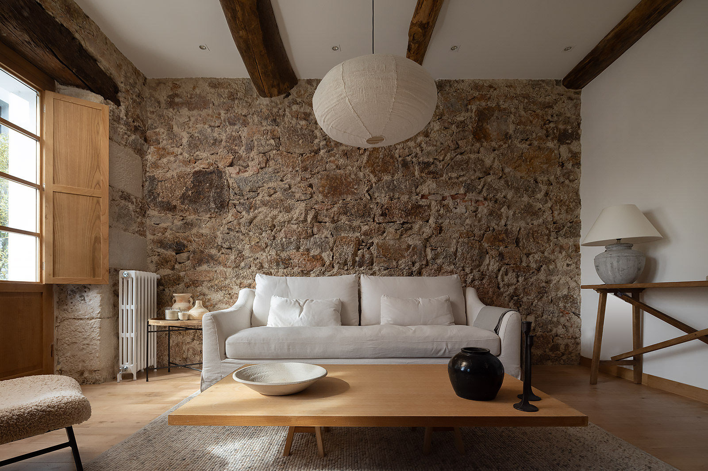
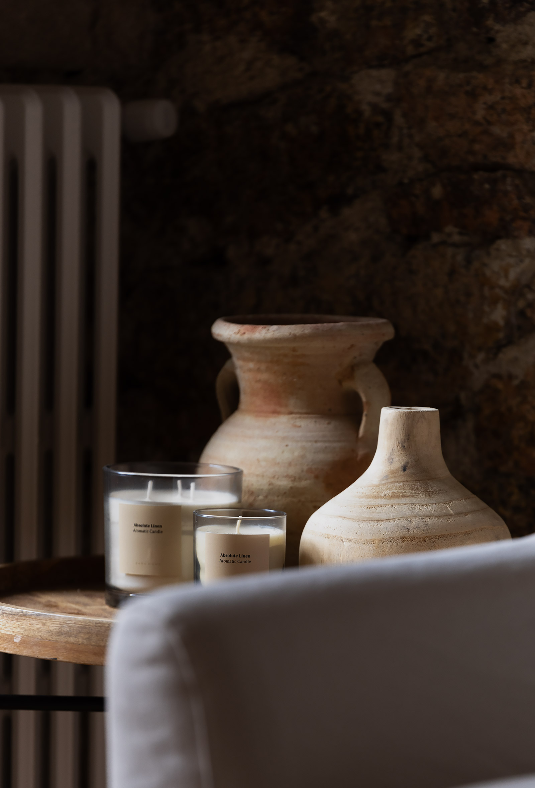
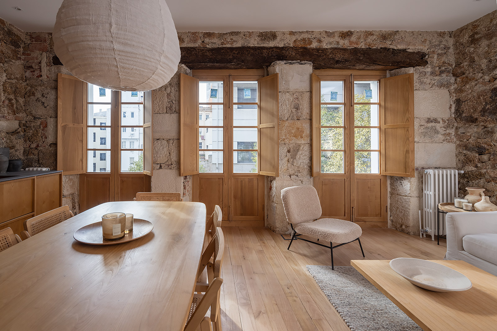
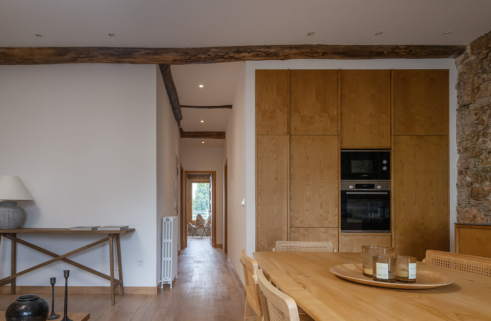
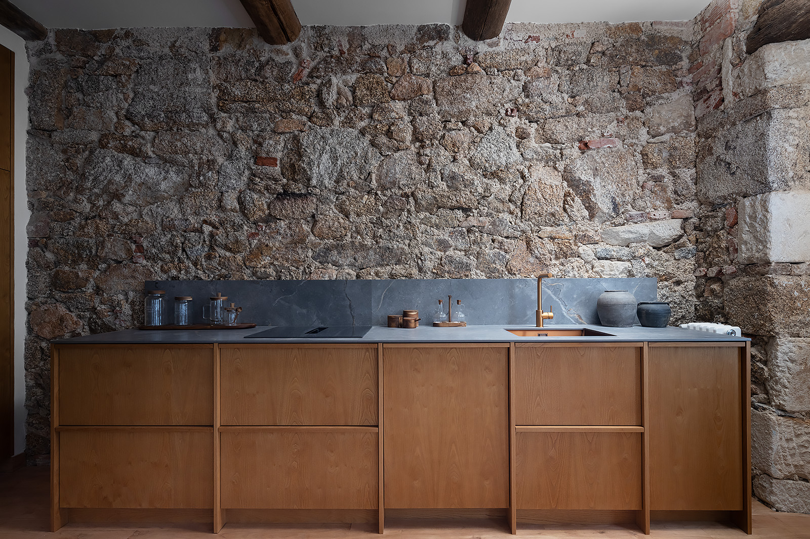
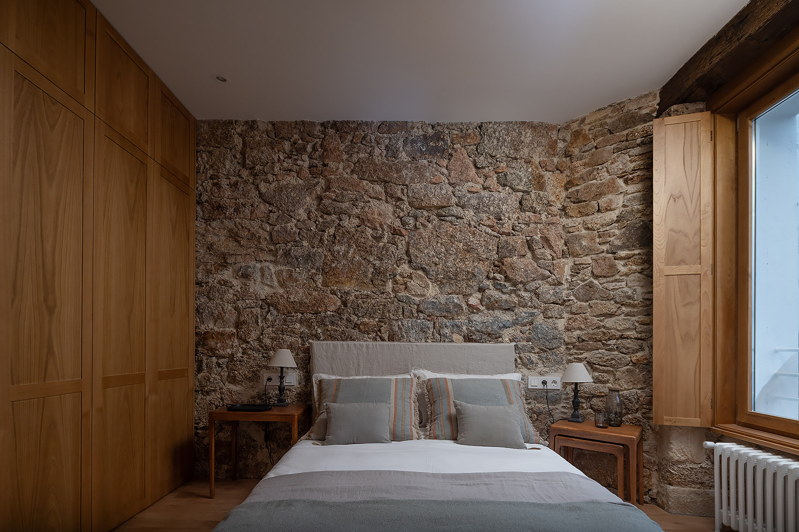
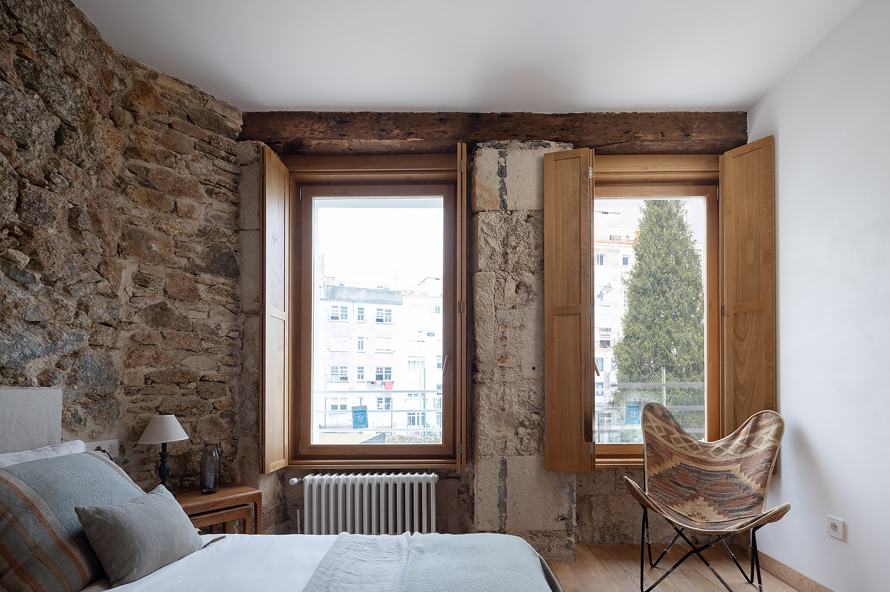
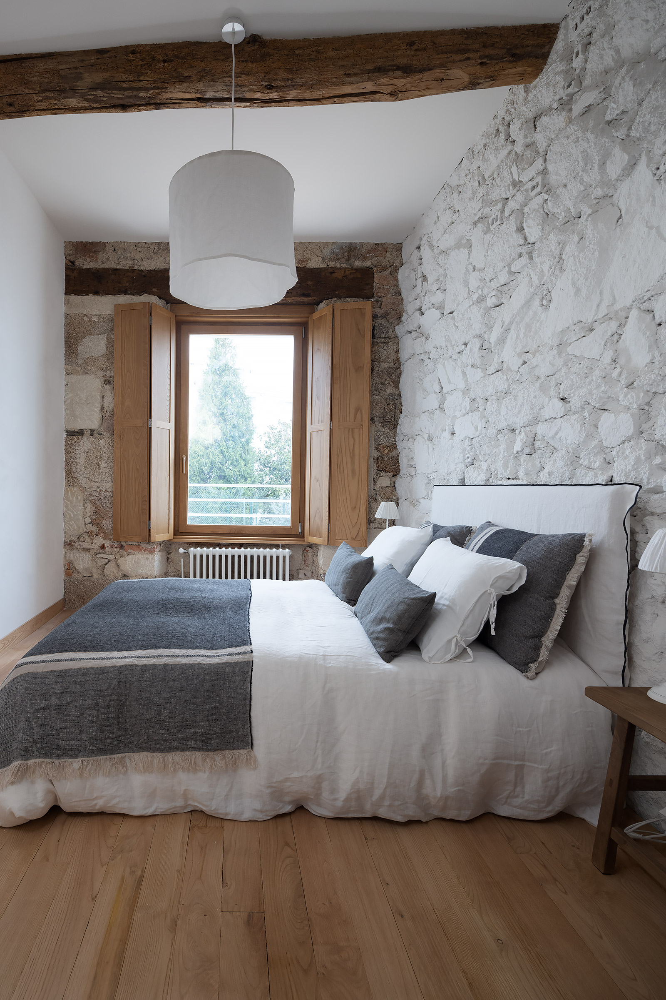
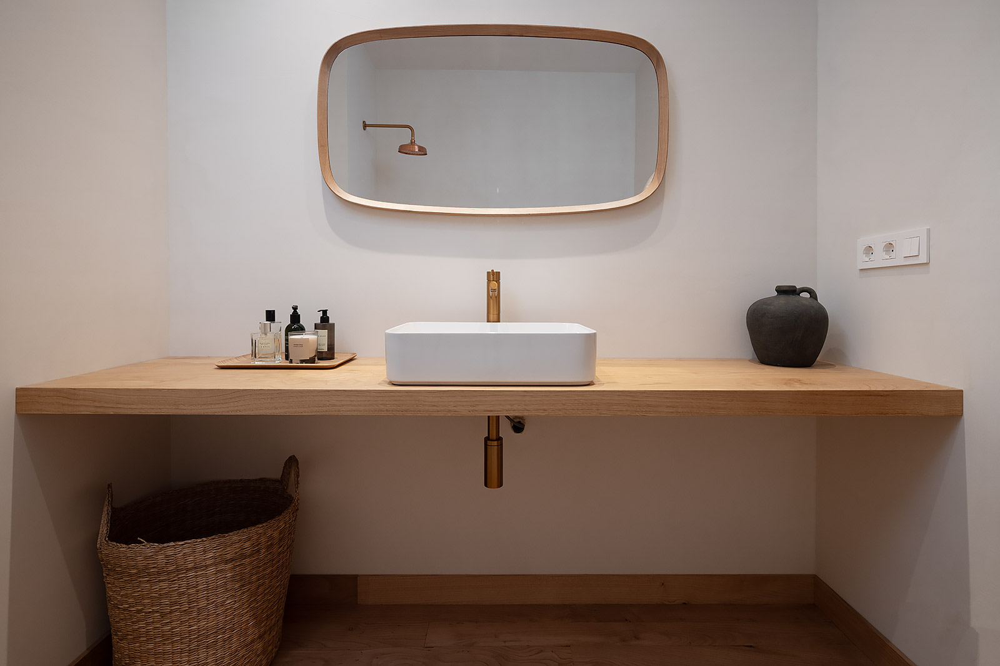
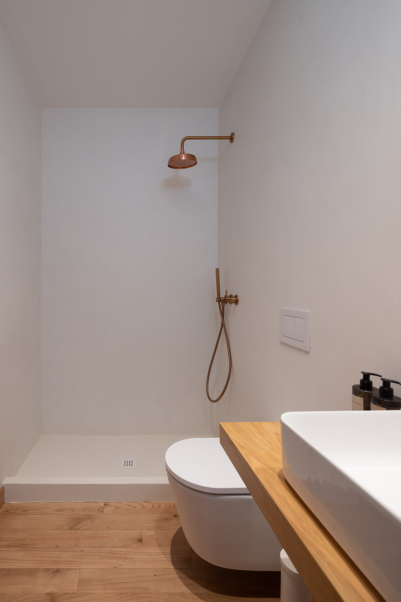

Una encantadora vivienda de estilo rústico con jardín en el centro de la ciudad!
Esta casa había estado abandonada durante muchos años a la espera de su rehabilitación, la cual hemos realizado con un planteamiento conservacionista a la vez que contemplando la necesidad de adaptar el proyecto a un modelo actualizado. El resultado ha sido una completa redistribución de espacios y la recuperación de todos los muros perimetrales de piedra y los techos de madera originales, que los hemos dejado en estado crudo, sin apenas intervención. Hemos puesto en valor lo que ya había, y con lo que hemos añadido, se ha conseguido una vivienda extraordinariamente acogedora, con un jardín espectacular en el centro de la ciudad.





Para conservar el espíritu austero y elegante de la arquitectura original, además de mantener toda la piedra, se mantuvo la gran altura de sus techos, se sustituyeron todas las carpinterías por réplicas exactas de las originales en madera de castaño y se colocó suelo radiante con sistema de aerotermia, conectando lo nuevo con lo antiguo y ensalzando su carácter rústico y tan gallego.
Con los materiales utilizados, como el hormigón, la madera de castaño o el microcemento lo que se consigue es que cada textura, cada detalle, no solo rindan homenaje a la riqueza natural de Galicia, sino que también reflejen nuestro compromiso con la sostenibilidad y la preservación del entorno.




